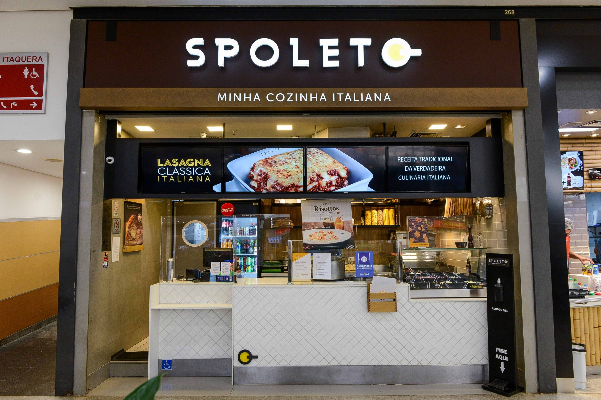

|  |
Sobre nósSomos o Spoleto, a casa da massa do seu jeito. Desde 1999, a gente acredita que a melhor comida italiana é aquela feita por você.
Nosso lema, "Minha vida. Meu prato.", resume a nossa missão: transformar a culinária em uma experiência única e personalizada. Você escolhe a base — massa, salada ou nhoque — os ingredientes frescos, os molhos e finaliza com a gente. Tudo é preparado na hora, com a qualidade e o carinho de uma verdadeira cantina italiana.
O Spoleto é mais que um restaurante: é um lugar onde você é o protagonista, criando um prato que tem a sua cara, o seu gosto e a sua história. |